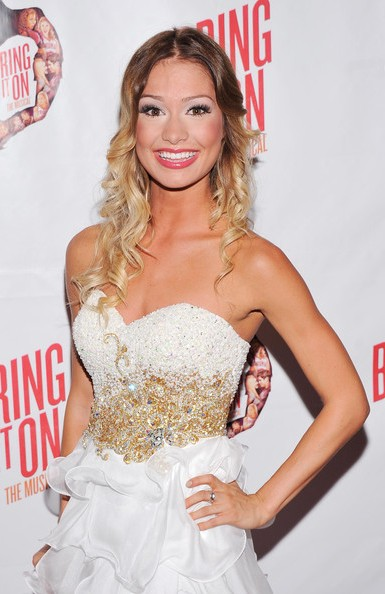

Bare A pop opera
Falsetto
Home
Heathers: The Musical is a rock musical with music, lyrics, and a book by Laurence O'Keefe and Kevin Murphy and based on
the 1988 cult film Heathers.
the show opens conversations about dark issues including 'bullying, teen suicide, and
violence in schools. The 'social politicsof high school are shifted when rebellious Veronica Sawyer meets
the damaged romantic wild card J.D., and the hierarchy ruled by the clique of Heathers falls apart with accidental
and not so accidental murders. Heathers explores empowerment and vulnerability in the relationships between friends, lovers,
parents and school communities, creating a show of high emotion.
 Veronica Sawyer, is the main female protagonist of the Heathers. She becomes part
of the most popular clique in her high school known as the Heathers. Her best friend is martha however the two start driffiting part.
Veronica eventually gets involded with J.D. who is a slightly crazed
Veronica Sawyer, is the main female protagonist of the Heathers. She becomes part
of the most popular clique in her high school known as the Heathers. Her best friend is martha however the two start driffiting part.
Veronica eventually gets involded with J.D. who is a slightly crazed
Jason "J.D." Dean is the main male protagonist of the Heathers.
He falls in love with Veronica Sawyer killing three students who hurt Veronica throughout
the film before ultimately killing himself.
Heather Chandler, is the first female antagonist of theHeathers. She is the deceased
leader of the most popular and powerful clique at Westerburg
High known as The Heathers.

Heather McNamara,, is a support character
in the Heathers.
She is the head cheerleader at Westerburg High and is arguably the nicest of the Heathers

Heather Duke, is the second female antagonist in thHeathers.
She is initially portrayed as the timid and shy bookworm,
but is later revealed to be as cruel of a tyrant as Heather Chandler.
Heather Duke takes over as leader of the Heathers after Heather Chandler's "suicide",
but is later stripped of her power by Veronica Sawyer.
Ram Sweeney is an athlete at Westerberg High School. He played a Defensive Linebacker
for the Westerberg High School football team for approximately 3 years.
Typically seen harassing Heather Duke in the stage musical. In Kindergarten,
he engaged in a courtship with Martha Dunstock ("Martha Dumptruck") where he kissed her on the kick ball field.
He is the best friend of Kurt Kelly and was killed by J.D., his murder staged as a gay suicide pact.
Kurt Kelly is a secondary character of the Heathers.
He is the quarterback of the Westerburg High School football team.